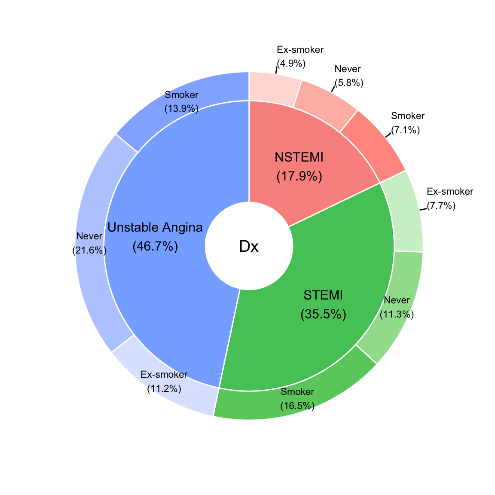
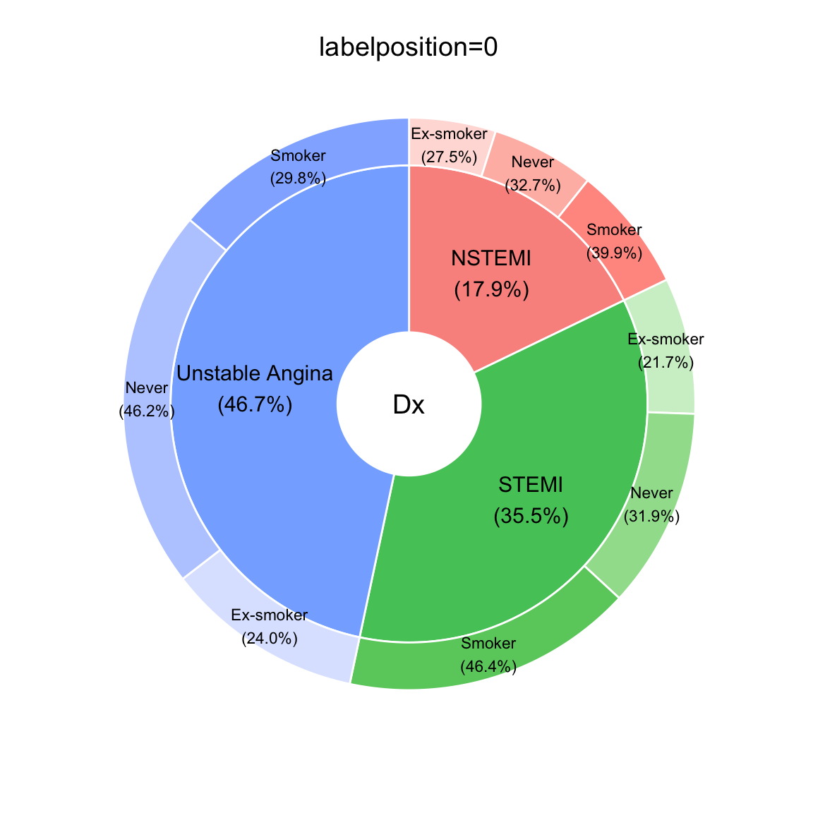
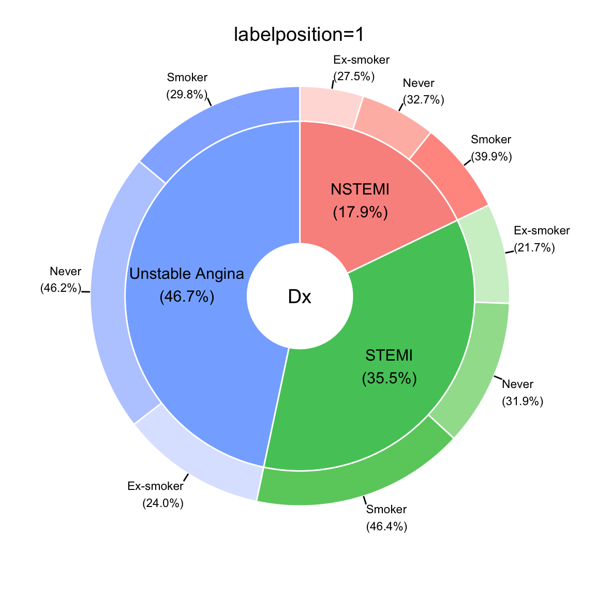
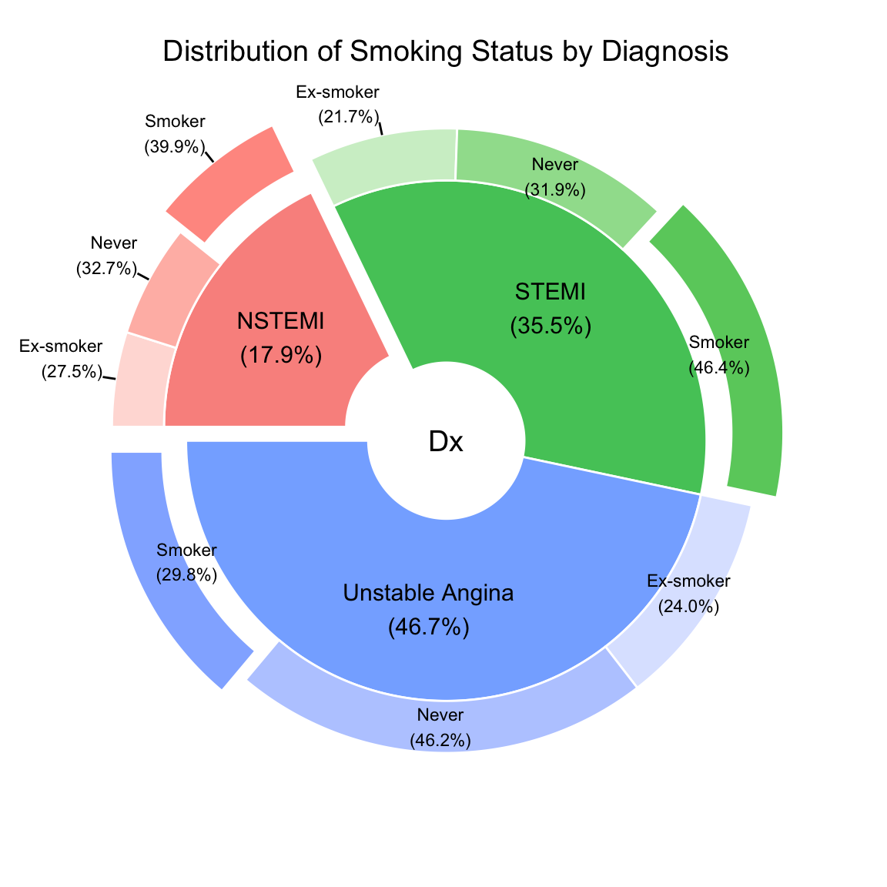
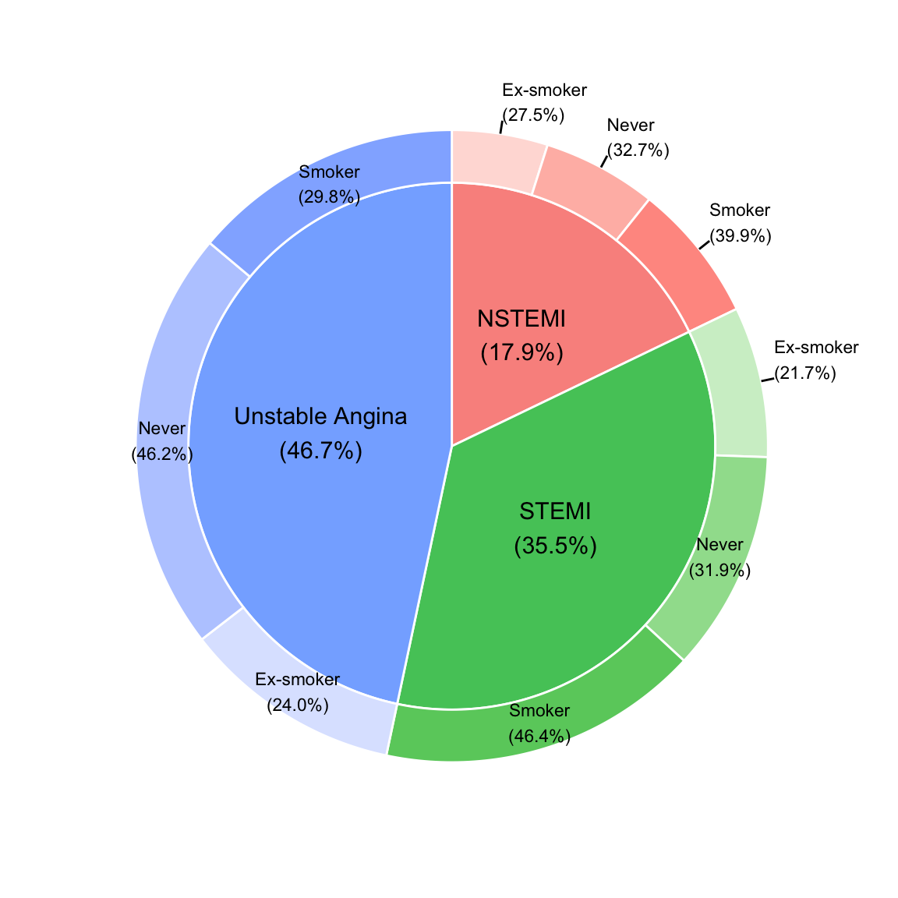
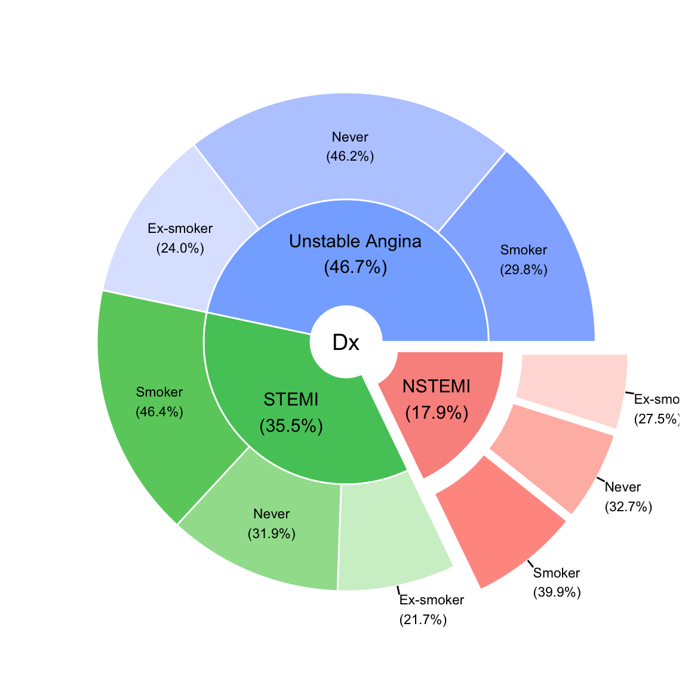
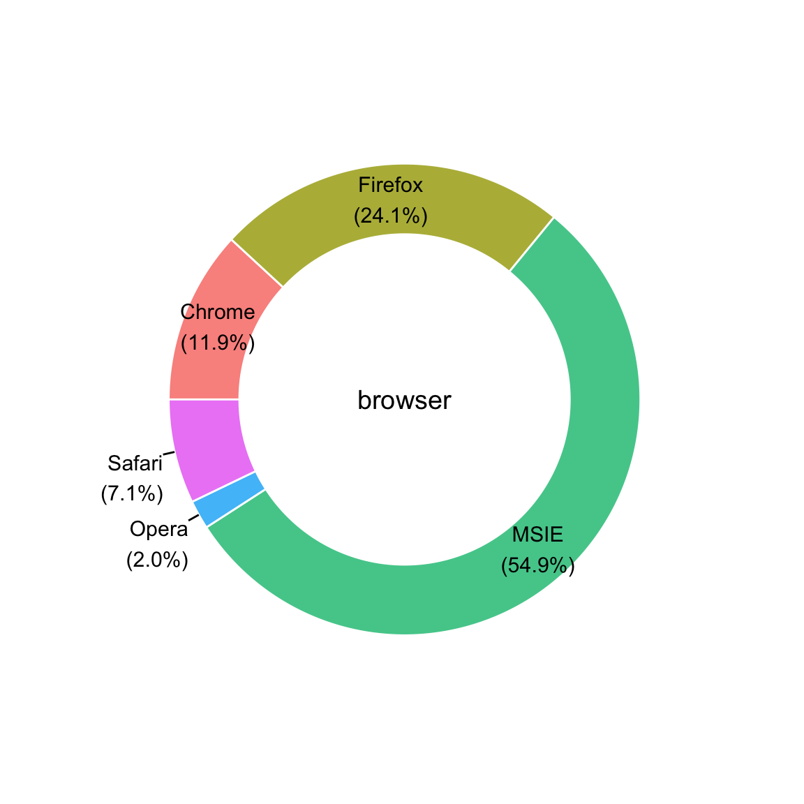
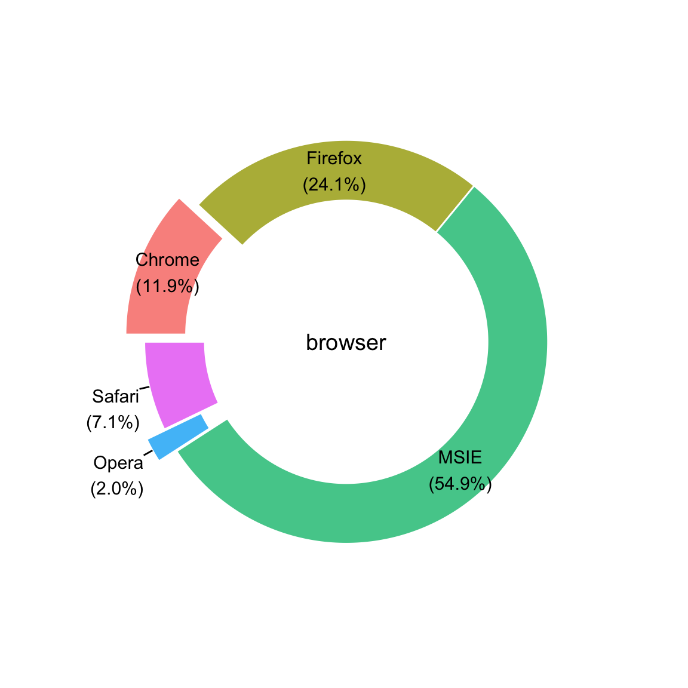
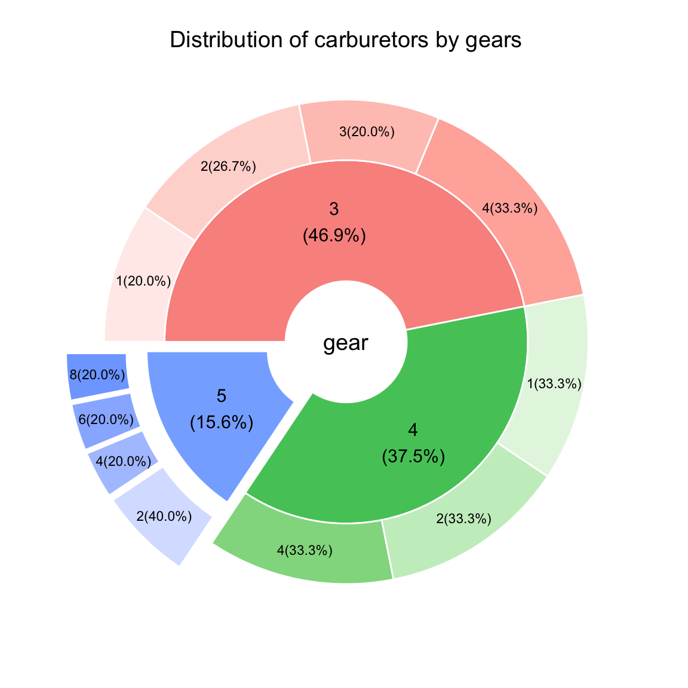

A pie chart (or a circle chart) is a circular statistical graphic which is divided into slices to illustrate numerical proportion. In a pie chart, the arc length of each slice (and consequently its central angle and area), is proportional to the quantity it represents. While it is named for its resemblance to a pie which has been sliced, there are variations on the way it can be presented. A doughnut chart (also spelled donut) is a variant of the pie chart, with a blank center allowing for additional information about the data as a whole to be included. I recently developed a function named “PieDonut” to combine pie and donut chart.
Installation of packages
You have to install the latest versions of “webr” and “moonBook” packages from github. The CRAN version does not have PieDonut() function.
if(!require(devtools)) install.packages("devtools")
devtools::install_github("cardiomoon/moonBook")
devtools::install_github("cardiomoon/webr")Basic Use
The acs data included in package moonBook is demographic and laboratory data of 857 patients with acute coronary syndrome(ACS). If you want to show the distribution of smoking status according to diagnosis, make the PieDonut Plot with the following code.
Label position
By default, the labelposition argument is 2 - labels for doughnuts are located outside if the percentage of total is less than 10 % (labelpositionThreshold=0.1 by default).

If you want to place the labels for donuts inside, set the labelposition argument 0. To place all labels outside, set the labelposition argument 1.
PieDonut(acs,aes(Dx,smoking),selected=1,labelposition=0,title="labelposition=0")
PieDonut(acs,aes(Dx,smoking),selected=1,labelposition=1,title="labelposition=1")

Add title
PieDonut(acs,aes(Dx,smoking),start=3*pi/2,explode=1,selected=c(3,6,9),explodeDonut=TRUE,title="Distribution of Smoking Status by Diagnosis")
Adjust the radius
You can adjust the radius of pie and donut plot with r0, r1 and r2 arguments. If you want to show exact pie(withoue a center hole), set the r0 argument ‘0’ and showPieName FALSE.

You can adjust the radius of pie(r1, default value 1) and radius doughnut(r2, default value 1.2). You can make smaller pies and larger doughnuts with the following codes.

Show Ratio by group
By Default, the ratio of donuts are percentage by group. If you want to show percentage of total, set the ratioByGroup argument FALSE.

Doughnut plot
If you want to show donut plot(without pie), please use the followng code.
browser=c("MSIE","Firefox","Chrome","Safari","Opera")
share=c(50,21.9,10.8,6.5,1.8)
df=data.frame(browser,share)
PieDonut(df,aes(browser,count=share),r0=0.7,start=3*pi/2,labelpositionThreshold=0.1)
PieDonut(df,aes(browser,count=share),r0=0.7,explode=c(1,4),start=3*pi/2)
Summarized Data
If you have summarized data, please map the count variable to count.
# A tibble: 11 x 3
# Groups: gear [?]
gear carb n
<dbl> <dbl> <int>
1 3 1 3
2 3 2 4
3 3 3 3
4 3 4 5
5 4 1 4
6 4 2 4
7 4 4 4
8 5 2 2
9 5 4 1
10 5 6 1
11 5 8 1PieDonut(df,aes(gear,carb,count=n),explode=3,r1=0.9,explodeDonut=TRUE,title="Distribution of carburetors by gears",star=3*pi/2,labelposition=0)
This plot is identical with the following plot.
PieDonut(mtcars,aes(gear,carb),explode=3,r1=0.9,explodeDonut=TRUE,title="Distribution of carburetors by gears",star=3*pi/2,labelposition=0)